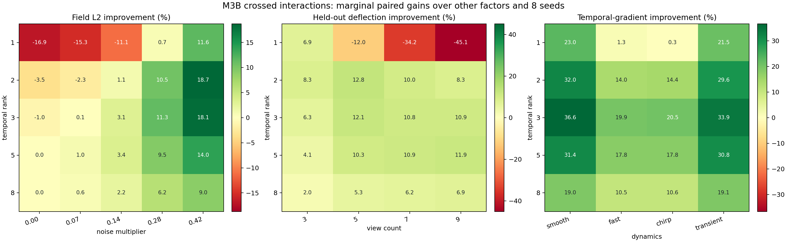
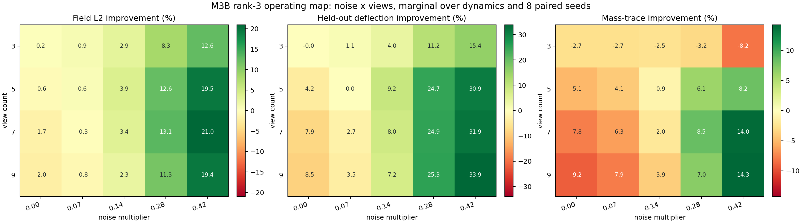
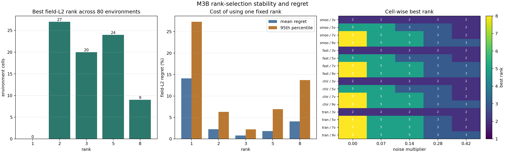
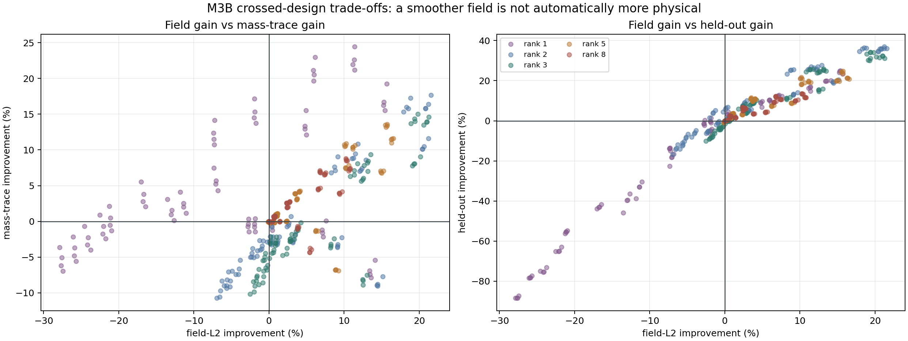

{kind=link}
{kind=link}
{kind=link}
{kind=link}
最优 rank 随 noise 与 views 翻转
noise=0 的 16 个环境中 9 个选 rank 8；noise=0.28 时 12/16 选 rank 3；noise=0.42 时 11/16 选 rank 2。固定 rank 只能是折中。
上一轮六轴 OFAT 找到 noise、views 和 dynamics 线索；这一轮把它们真正交叉起来，检验固定 rank 是否经得住变量联动。结论不是“rank 3 每格最优”，而是“在这个 synthetic design 里，它是 regret 最低的固定默认值，同时仍存在明确负收益区和物理量代价”。
本页提出的 held-out / singular-spectrum / physical-trace selector 已在新的 M3B 跨形态实验中实现并做 nested leave-one-phantom-family-out 评价。新设计覆盖 4 morphology × 3 dynamics × 4 noise × 3 views × 6 seeds，共 864 个观测格；固定 rank 3 mean regret 为 1.561%，无 held-out 多特征 selector 为 0.252%，加入 held-out 为 0.210%。直接最小化 held-out residual 反而恶化到 2.423%，因此本页的“下一步”现已升级为 leave-one-geometry-out、UQ/拒答和真实数据验证。
rank 3 是稳健默认值，不是普适最优值。 它只在 80 个环境中逐格最优 20 次，但全局平均 field L2 最低；相对逐格 oracle best 的平均 regret 为 0.79%，95 分位为 2.21%，均为五个固定 rank 中最低。真实部署不能用 ground truth 选 rank，下一步必须把选择规则转成 held-out view、奇异值能量或物理 trace 等可观测指标。
四种视角分别回答“固定 rank 是否稳”“何时有正收益”“时序收益是否依赖动力学”“场误差变好是否仍物理可信”。
逐格最优 rank 分散在 2/3/5/8；rank 3 并不统治每个单元，却同时最小化平均和尾部 regret，说明它适合作为 synthetic baseline 默认值。
状态：无真值 selector 已在跨形态页面完成；下一步是 geometry transfer、UQ/拒答与真实数据。




| Rank | 逐格最优次数 | Mean regret | Median | P95 | Max | 处理建议 |
|---|---|---|---|---|---|---|
| 1 | 0 / 80 | 14.10% | 12.95% | 27.29% | 27.90% | 过度压缩，只适合作故意失败 baseline。 |
| 2 | 27 / 80 | 2.25% | 1.60% | 6.28% | 6.97% | 3 views 或高噪声常更优，但尾部风险高于 rank 3。 |
| 3 | 20 / 80 | 0.79% | 0.49% | 2.21% | 2.52% | 当前最稳固定默认值；不是每格 oracle。 |
| 5 | 24 / 80 | 1.81% | 0.43% | 6.94% | 7.64% | 低噪、5-9 views 常好，但高噪尾部代价增大。 |
| 8 | 9 / 80 | 4.10% | 1.39% | 13.70% | 14.58% | 无噪声且视角充分时有用，去噪能力不足。 |
noise=0 的 16 个环境中 9 个选 rank 8；noise=0.28 时 12/16 选 rank 3；noise=0.42 时 11/16 选 rank 2。固定 rank 只能是折中。
所有 20 个 3-view 环境都由 rank 2 取得最低 field L2。严重欠定时需要更强压缩，不应照搬 5-9 views 的 rank。
Student-t 区间下 61/80 个 field 正收益、19/80 个负收益、0 个跨零；负收益集中在无噪声及低噪的 5-9 views。
rank 3 的 temporal-gradient 边际改善：smooth 36.6%、fast 19.9%、chirp 20.5%、transient 33.9%。去抖收益依赖动力学频谱。
116/400 个环境×rank 单元出现 field 正收益但 mass-trace 负收益；对 rank 3，是 37/61 个 field 正收益单元。
本页 oracle best 使用 ground-truth field L2，只用于估计 regret。真实数据必须改用 held-out view、奇异谱、事件幅值和积分量联合选择。
| 视角数 | Field 转正 | Held-out 转正 | Mass trace 转正 | 解释 |
|---|---|---|---|---|
| 3 views | noise=0 即略正 | noise≈0.07 | 本扫描未转正 | 强欠定使场平滑有利，但积分量持续受损。 |
| 5 views | noise≈0.07 | noise≈0.07 附近 | noise≈0.28 | 默认工作区；不同指标给出不同门槛。 |
| 7 views | noise≈0.14 | noise≈0.14 | noise≈0.28 | 低噪下高 rank 更合适，噪声升高才需要 rank 3。 |
| 9 views | noise≈0.14 | noise≈0.14 | noise≈0.28 | 充分视角下过早压缩会同时伤 field、test view 和 mass。 |
M3B 证明的是“先验的收益随 view/noise/dynamics 工作域变化”，因此 T16 的训练与测试应按完整 condition cell 切分，并保留 field、held-out 与积分量反例。T16 三种子消融出现同构证据：Residual FNO 在 IID/noise OOD 更好，而 Absolute FNO 在 3-view/joint OOD 更好。18-run gate 筛查否定简单单标量门控，新的 3-seed dual v1 则证明 support-view 闭式融合能稳定改变先验权重，而 query router 依然塌缩。下一步把 operating-map 思路转成“support physics 锚点 + 受限学习修正 + 可识别度/UQ”，而不是继续雕刻一个 alpha，也不是把 temporal rank 3 误当 FNO modes。
静态 gate 跑稳后，M3B 才作为 temporal operator 的 fixed-rank baseline：framewise hybrid FNO、framewise FNO + rank-3 projection、short-window temporal residual operator 三者公平比较。
本页仍是 24×24×10、18 帧、单一 phantom 族、简化直线投影与 temporal SVD 的 clean-room toy。8 个 seed 只代表观测噪声，不是 8 个独立火焰工况；全局 affine alignment 和 oracle best rank 都使用真值，只适合审计方法上限与 regret。跨 morphology 和无真值 selector 已由新页面补上，但 bias、frame count、sampling rate、曝光模糊和真实相机几何仍未进入交叉设计。